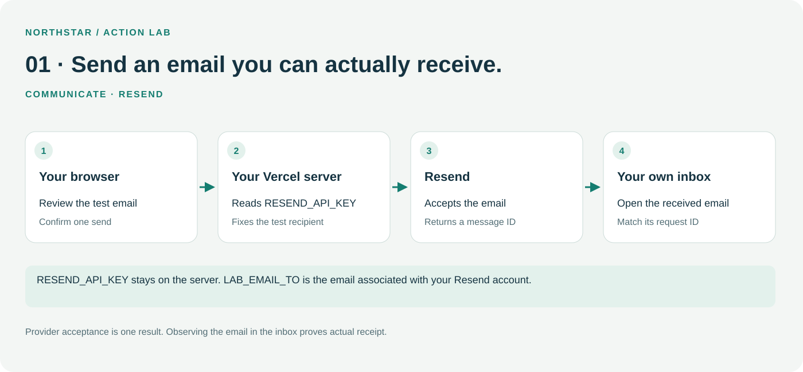

01 · Email · 30 minutes
Send yourself a real email
Use Resend’s testing sender to send the review to your own inbox.

Connect my Resend account
- Create or open your Resend account → API Keys.
- Create a practice key with Full access. The app needs to send the email and read its result back.
- Use the email address associated with that same Resend account as the recipient.
RESEND_API_KEY- Your practice API key.
LAB_EMAIL_TO- Your own Resend account email address.
The sender is already set to onboarding@resend.dev. You do not need a domain for this own-address test. Sending to other people requires additional setup.
Checkpoint: check the provider’s delivery status and inspect your inbox. “Accepted” alone is not delivery.